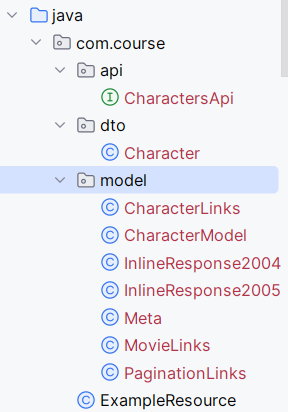

Description
The aim of this application is to create a microservice that interacts with a public API about the Harry Potter world.
Then we'll be importing the data in the public API in our database and running some queries.
This is the project structure: 
The api package is used to connect to the remote website. The dto package is used to store in the database. The model package is used to parse the api response.
Setup
Docker compose
version: "3"
services:
database:
image: "postgres:14"
container_name: "hp-database"
ports:
- "5432:5432"
environment:
POSTGRES_USER: postgres
POSTGRES_PASSWORD: password
POSTGRES_DB: quarkusdb
zookeeper:
image: quay.io/strimzi/kafka:0.39.0-kafka-3.6.1
command: [
"sh", "-c",
"bin/zookeeper-server-start.sh config/zookeeper.properties"
]
ports:
- "2181:2181"
environment:
LOG_DIR: /tmp/logs
kafka:
image: quay.io/strimzi/kafka:0.39.0-kafka-3.6.1
command: [
"sh", "-c",
"bin/kafka-server-start.sh config/server.properties --override listeners=$${KAFKA_LISTENERS} --override advertised.listeners=$${KAFKA_ADVERTISED_LISTENERS} --override zookeeper.connect=$${KAFKA_ZOOKEEPER_CONNECT}"
]
depends_on:
- zookeeper
ports:
- "9092:9092"
environment:
LOG_DIR: "/tmp/logs"
KAFKA_ADVERTISED_LISTENERS: PLAINTEXT://kafka:9092
KAFKA_LISTENERS: PLAINTEXT://0.0.0.0:9092
KAFKA_ZOOKEEPER_CONNECT: zookeeper:2181
Project Starter
Download from github
Open-api extension already added.
Rest client
Register CharactersApi as a rest client, you can use the Guide as reference.
Connect to the https://api.potterdb.com/ api to get characters.
Here is some documentation: potterdb.com
Complete the method to get a character list and by id and create methods in ExampleResource to check it.
Database
You can use the Guide as reference.
1) Create the Enum :
2) Use ObjectMapper to convert json to class then persist it.
//import com.fasterxml.jackson.databind.ObjectMapper;
ObjectMapper objectMapper = new ObjectMapper();
List<CharacterModel> list = objectMapper.readerForListOf(CharacterModel.class).readValue(getClass().getClassLoader().getResourceAsStream("hp.json"));
3) Create a Rest load function to initialize the database.
4) Create panache queries to complete these REST methods:
//GET on /
public List<CharacterModel> findAll() {
}
//GET on character/{id}
public List<CharacterModel> findById(Long id) {
}
//GET on houses/{house}
public List<CharacterModel> findByHouse(Houses house) {
}
//GET on houses-count/{house}
public int countByHouse(Houses house) {
}
//GET on species/{specie}
public List<CharacterModel> findBySpeciesLike(String specie) {
//Use a namedQuery for this query
}
Messaging
We will now send a message containing the House of the character to another microservice each time we add a Character to the database
Read the following guide
1) Add extension to current project
2) Create a class namedPerso, with a name and the Enum Houses.
3) In the class where you add the Character to the database, each time you add an entry to the database, send a new message using an Emitter
4) Set the configuration on the application.properties file
5) Create a new project
./mvnw io.quarkus:quarkus-maven-plugin:3.9.1:create -"DplatformVersion=3.9.1" -"DprojectGroupId=com.course.hp" -"DprojectArtifactId=message" -DclassName="com.course.message.MessageResource" -Dpath="api/message" -Dextensions="resteasy-jackson,quarkus-smallrye-openapi,,messaging-kafka"
6) Copy Perso and Houses to the new project.
7) Create in each project a class named Perso, with a name and the Enum Houses.
8) In the MessageResource class use the @Incoming annotation on a method called processMessage to receive instances of Perso and store it in a list.
9) Set the configuration on the application.properties file
10) Create a get method to return the list.
11) Create a get method with Houses as parameter, returning the number of Perso corresponding to that house.
Now if you run both microservices you should have in the message microservice a Perso message for each database entry.